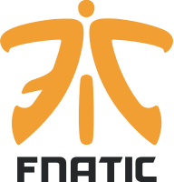

G2 ESPORTS
MISFITS GAMING
FNATIC
L'histoire des LCS EU au Mondial est extraordinaire. C'est l'une des deux régions non coréennes à avoir obtenu la coupe, grâce à l'obtention du titre par Fnatic lors de la saison 1. Les équipes européennes sont allées jusqu'en demi-finale deux ans de suite et ont accédé à la finale du MSI de cette année. Mais leurs piètres performances aux Rift Rivals ont semé le doute sur leur capacité à obtenir des résultats au Mondial. Est-ce un mauvais présage, ou l'avertissement dont les LCS EU avaient besoin pour se reprendre ?